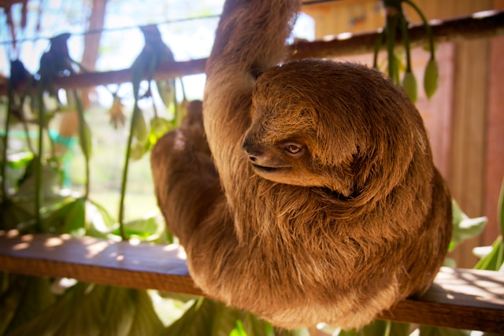

Gallery: sloths in every form and shape


fun and very fun facts about sloths
- This is not a surprise, but now you know for a fact, that sloths are the slowest mammal in the world.
- They prefer to be in trees, it is like their home. The safest place for them is high above the ground where they can protect themselves from predators.
- They come down usually only for pooping - so once a week.
- They are faster in the water than they are on land. Sloths can swim three times as fast in the water as they can on land.
- Sloths are around three times stronger than humans.
- They can turn green. Sloths can grow a layer of algae as a camouflage method to help protect them from predators.
- Sloths are color-blind.
- Sloth mums give birth in trees. The mother will give birth up in the trees and scoop her baby up after birth and lay it across her stomach.
- Sometimes sloths give birth upside down.
- Sloths can fall 100 feet without injury. Sloths are designed to fall out of trees and they fall out of them on average once a week.
- They can hang upside down. This is partly due to their intense amounts of upper body strength, but they also breathe better this way.
- A sloth can turn their head 270 degrees. This is because they have two extra vertebrae in their neck.
- They love sleeping. Sloths sleep on average 15-20 hours within a day.
Find out more about sloths
There are a lot of websites that have more information about sloths. Visit WWF website or have a look at the Wikipedia article about sloths. For kids there is the National Geographic Website that offers a lot of stuff for the younger ones. On the website of the Zoo Dresden you have specific information about where to find the animals on their property. If you've seen enough text and pictures and are craving some moving pictures, visit the YouTube channel of "Brave Wilderness" to have a look at the Cutest Baby Sloth EVER!